▸DescArte — Projeto Final (1º Ano, UNESPAR)
▸Sobre o projeto
O DescArte é um projeto artístico-investigativo desenvolvido coletivamente no primeiro ano do curso de Artes Visuais (UNESPAR), articulando diversas disciplinas do ateliê e da pesquisa visual. A investigação parte do lixo urbano como espelho do cotidiano, das desigualdades socioespaciais e da "anestesia estética" das cidades — propondo deslocar o olhar automático para aquilo que costumamos ignorar e ressignificar resíduos como matéria-prima poética e crítica.
▸Produções coletivas em ateliê
▸Trajetos — Tridimensional, Laboratório de Materiais e FRG
Desenvolvido coletivamente, este trabalho representa os trajetos individuais dos integrantes do grupo — o modo como cada um percebe o próprio percurso de casa até o ponto central da pesquisa, sinalizado por uma torre central — com forte inspiração na estrutura visual de jogos de tabuleiro e RPGs.
- Tridimensional: Modelagem e articulação entre objetos tridimensionais e o plano bidimensional.
- Laboratório de Materiais: Exploração de objetos prontos (ready-made), modelados, modificados e pintados, além da experimentação com diversas tintas e técnicas pictóricas.
- Fundamentos do Registro Gráfico (FRG): Composição visual do mapa e organização espacial pensadas para um ponto de vista fixo (zenital/fotográfico).
A conceituação, o planejamento e a execução ocorreram de modo integrado por todo o grupo: mesmo nos trechos referentes ao percurso de um integrante específico, todos intervieram e participaram ativamente da construção coletiva.
Minhas participações diretas: Disposição dos elementos e composição visual; planejamento do ângulo de visualização e registro fotográfico; construção do trilho do trem, do relevo e da rua com bicicleta; e queima controlada com fogo para criar as bordas irregulares da peça.
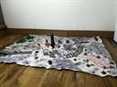
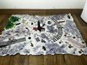
▸Terras do Descarte (Cartografia Pictórica) — Desenho, FRG, FLV e Pintura
Produzido coletivamente, este mapa pictórico traduz de forma territorial a divisão temática da produção, do destino e da permanência do lixo na cidade, bem como seus efeitos sociais. Inspirada nas cartografias das Grandes Navegações, a obra converte categorias temáticas e afetivas em acidentes geográficos — como bacias, ilhas e mares.
- Desenho: Construção do mapa pictórico a partir da projeção de grãos em uma mesa de luz para traçar a geografia inicial da cartografia.
- Pintura: Exploração do círculo cromático (cores análogas e complementares) não apenas pelo aspecto formal, mas pelos contrastes e sentidos emocionais evocadas por cada zona.
- Fundamentos do Registro Gráfico (FRG): Organização e equilíbrio compositivo do mapa.
- Fundamentos da Linguagem Visual (FLV): Pesquisa de texturas gráficas e pictóricas com materiais riscantes e tintas.
Todo o processo — da conceituação à execução — foi compartilhado sem divisão rígida de áreas por autor, mesclando o gesto de todos a partir de planejamento e discussão prévios.
Minhas participações diretas: Desenhos e representações figurativas com materiais riscantes (especialmente com uso de hachuras); investigação da divisão social e afetiva dos dejetos; e criação das nomeações da cartografia.
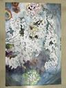
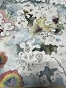
▸Processo de criação

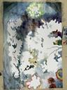
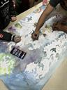
▸Carnaval — Laboratório de Materiais e Desenho
Criado coletivamente, o título deste trabalho dialoga diretamente com sua metodologia: um processo aberto, desordenado e não linear, construído a partir de descartes trazidos de casa por cada integrante e explorados livremente sobre o suporte. A obra dialoga com os vestígios materiais que a própria festa deixa para trás, atravessados por memórias, afetos, coletividade e subjetividade. Desde o início, a proposta partiu da desordem e do acúmulo para investigar como, mesmo em meio ao caos, emerge uma intencionalidade compositiva — visível nas bordas, nos saltos tridimensionais dos objetos e nos novos significados criados pelo encontro dos materiais.
- Desenho: Exploração de materiais não convencionais sobre suporte plano.
- Laboratório de Materiais: Ressignificação de objetos descartados e procedimentos de assemblage.
A execução ocorreu de forma totalmente integrada, sem delimitação de zonas individuais, negociando coletivamente a natureza desse "caos" ao longo do fazer.
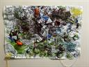
▸Trajetos (Pré-concepção) — Fundamentos do Registro Gráfico
Trabalho coletivo que funcionou como estudo preparatório e experimentação formal para Trajetos. Durante o processo, o grupo testou soluções compositivas e recursos visuais e simbólicos — como a espiral — para conceituar os diferentes pontos de partida e trajetos individuais que se sobrepõem rumo ao destino final.
Minhas participações diretas: Exploração principal das texturas e elementos de contraste, além da organização compositiva e do equilíbrio de pesos visuais.
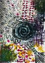
▸Intervenção urbana
As intervenções urbanas tiveram como eixo central o deslocamento do olhar cotidiano: trazer à altura dos olhos o lixo que costuma permanecer invisibilizado no chão. A proposta buscou provocar os transeuntes da região central (com foco na Praça XV) a notar esses resíduos, utilizando o próprio lixo como suporte e matéria da ação — prendendo objetos descartados em postes e colando cartazes e lambe-lambes que convocam à reflexão sobre origem, consumo, impactos e políticas de cuidado ou ocultamento do espaço urbano.
Essas questões também orientam o curta-metragem produzido a partir de abordagens e relatos de pedestres no calçadão da Rua XV, discutindo as relações socioeconômicas do lixo, bem como as memórias e afetos que os objetos descartados carregam.
▸Intervenção e Lambe-lambe (Arredores da Praça do Largo) — Tridimensional
Nos arredores do centro de Curitiba, as intervenções foram distribuídas como uma trilha ao longo dos fluxos mais intensos de passagem, permitindo que os pedestres conectassem uma ação à outra durante o caminhar.
Minhas participações diretas: Escolha estratégica dos pontos de instalação e dos modos de fixação ou escrita, pensando a cidade como suporte e a composição visual a partir do campo de visão de quem passa. Destacam-se: o uso de papelão descartado no próprio chão como suporte para um comando que direcionava o olhar ao lixo logo abaixo; a intervenção em uma escada, onde o desnível obriga o pedestre a encarar o trabalho ao descer; e a fixação de uma garrafa no poste à altura do olhar, ação que imediatamente despertou a atenção e a parada de transeuntes.


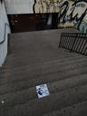

▸Curta-metragem e Mural Coletivo (Calçadão da Rua XV de Novembro)
O curta reúne relatos gravados em áudio com pedestres que participaram da proposta do mural coletivo instalado no calçadão da Rua XV de Novembro. A ação buscou evidenciar que cada resíduo guarda uma memória, um trajeto e uma subjetividade, funcionando como vestígio dos hábitos de quem passou por ali.
Minhas participações diretas: Idealização da proposta e edição de vídeo e áudio.
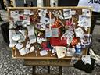
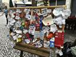
▸Extras
▸Gravura com lixos e dejetos
Experimentação gráfica utilizando resíduos coletados como matrizes e elementos de impressão.
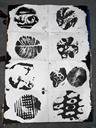
▸Vetorização das gravuras — Tratamento de Imagem e Fundamentos da Linguagem Visual (FLV)
Digitalização e vetorização das gravuras produzidas com resíduos para aplicação como texturas gráficas nos materiais digitais de apresentação do projeto.
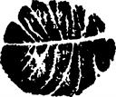
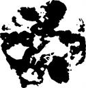
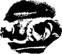
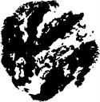
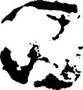
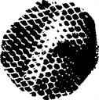
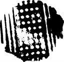
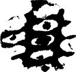
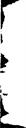
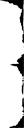
▸Desenho — Perspectiva, Observação e Variações Gráficas
Estudos de representação espacial e construção do olhar. A seção abrange desde a geometria de formas em perspectiva e o desenho de observação de cenários reais (como o registro da cruz da igreja) até experimentos de transfiguração gráfica e pareidolia. Inclui também esboços gestuais e estudos de variação de linguagem (registros caligráficos, geométricos e orgânicos).
▸Perspectiva e Geometria
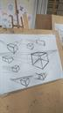
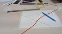
▸Observação e Variações Gráficas
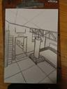
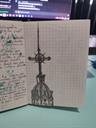
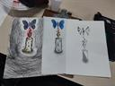
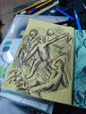
▸Pareidolia e Transfiguração
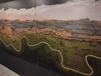
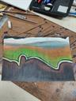
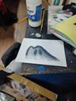
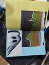
▸Pintura — Valoração, Cor e Paisagem
Pesquisa pictórica focada no comportamento da luz, na valoração tonal e na materialidade da tinta. Reúne estudos de sólidos geométricos em guache (preto e branco), natureza-morta, paisagens e o processo de construção de um cenário urbano, todos em tinta a óleo.
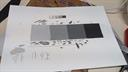
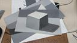
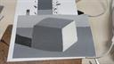
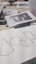
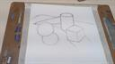
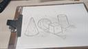
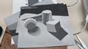
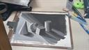
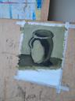
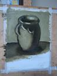
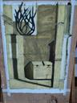
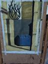
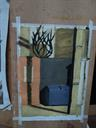
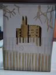
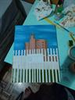
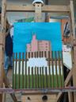
▸Tridimensional — Modelagem em Argila
Experimentação com a matéria e a ocupação do espaço. Estudos de modelagem em argila com foco na experimentação figurativa (retratos, anatomia e carcaça de peixe), acompanhados de registro em vídeo do processo de criação tátil.
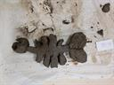
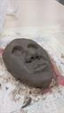
▸Ilustração Digital, Colagem e Produção Pessoal
Espaço dedicado à livre experimentação e à produção pessoal. Reúne ilustrações digitais com forte carga expressiva (em diferentes tratamentos de cor e traço), experimentações em pixel art, colagens com sobreposição de materiais, produções com stencil e spray, além da confecção de sketchbooks e cadernos de esboço.
▸Ilustrações Digitais
.jpg.jpg)
▸Colagens, Stencil e Cadernos
▸Fotografia — Registros Autorais
Registros fotográficos autorais que exploram a arquitetura, silhuetas, texturas urbanas e a natureza. O conjunto demonstra um olhar atento para a composição, o contraste entre luz e sombra e o enquadramento de elementos cotidianos.